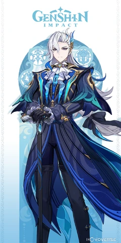

Fontaine · Character Records
Neuvillette
Fontaine’s Iudex is also the Hydro Dragon Sovereign. The Fontaine story links his gradual place in human society to the return of his elemental authority and his response to the Primordial Sea crisis.

Fontaine’s Iudex and an outsider
Neuvillette is Fontaine’s Chief Justice, the Iudex. He took office more than four hundred years before the present story and initiated institutional reforms with Carole, a Melusine, and Vautrin, leader of the Special Security and Surveillance Patrol. His Story Quest revisits the political hardliners who opposed those reforms, Carole’s death, and Vautrin’s trial.
Neuvillette initially calls himself an outsider even after centuries in Fontaine. He says he accepted the office partly to observe humans and seek answers about his own existence. The present-day case in the Story Quest contrasts his old isolation with a community that now acts to protect the Melusines.
The Hydro Dragon Sovereign
The Fontaine Archon Quest reveals that Neuvillette is the Hydro Dragon Sovereign, born again in human form. In Act IV he knows his identity but has not regained the Hydro authority taken from the dragons. The Story Quest takes place before the final act and reflects that earlier state.
In the finale, Focalors destroys the Hydro Archon’s divine throne, returning the Hydro authority to Neuvillette. With it, he transforms Fontaine’s people from Oceanids into true humans and averts the prophecy’s intended outcome. The Hydro Gnosis is a separate matter and leaves Fontaine through Arlecchino.
Neuvillette, Furina, and Focalors
Furina maintained the public role of Hydro Archon while Focalors pursued a hidden plan through the Oratrice. Neuvillette served as Iudex without knowing the full plan. His restored authority makes him essential to the ending, but it does not make him the Hydro Archon or erase Furina’s role in carrying out Focalors’s design.
The game’s later scenes show Neuvillette’s understanding of Fontaine changing alongside his relationships with Furina, the Melusines, and the people he once considered himself separate from. His arc joins a legal office, a dragon’s inherited authority, and an increasingly personal sense of responsibility.
Open questions and story order
The story establishes Neuvillette’s identity and the return of his Hydro authority, but not the full limits of his power or the eventual relationship between dragons and humans. The archive leaves those questions open rather than extrapolating from his authority alone.
For chronology, Diluvies Chapter occurs between Fontaine Archon Quest Acts IV and V. Read it alongside the final act if you want to distinguish what Neuvillette knows before Focalors’s plan concludes from what he learns afterward.
This is an original CoreGG reading guide, not an official HoYoverse article or a reproduction of the game text. Source links below identify the records used so you can check the original context.
Sources & references
Check these sources for the original game text and reference trail.